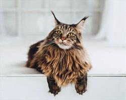

Meowz
Cat Body Language

Examples of relaxed body language:
- Loose, stretching out on side
- Rolling on back comfortably
- Eyes blinking slowly, casually gazing or closed if sleeping
- Ears in a neutral position or forward if alert/attentive
- Tail in neutral relaxed position, tip might move slightly or upright in a question mark shape
Examples of fearful body language:
- Tense
- Hunching to ground, trying to hide
- Eyes dilated in a light room or averted stare
- Closed eyes but faking sleep may indicate pain/stress
- Ears rotating backward or partially outward
- Tail curled around or under body
Examples of increased fear with possible aggressive body language:
- Eyes in a fixed stare
- Ears flattened to either side
- Tail twitching, lashing, or tail hairs standing on end
- Arched back with tail hair standing on end, possibly dilated pupils and pinned-back ears (“Halloween cat”)
8 Interesting Cat Facts For All Cat Lovers